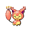

3DS home menu icon button

to change the height and width, just change the height and width of the .icon class. everything else will scale automatically!!
to change the color of the background, change the background-color of the .dsicon class from "gray" to a color of your choosing.
id appreciate credit if you use this for something but i dont care that much
<div class="icon">
<div class="dsiconouter">
<div class="dsicon">
<img src="insert image here!">
</div>
</div>
</div>
<style>
.icon {
position: relative;
width: 200px;
height: 200px;
}
.dsicon {
width: var(--dsiconwh);
height: var(--dsiconwh);
background-color: gray;
border-radius: 12%;
position: relative;
z-index: 2;
left: calc((100% - var(--dsiconwh)) / 2) ;
top: calc((100% - var(--dsiconwh)) / 2);
box-shadow: 0px 0px 3px 2px rgba(0, 0, 0, 0.30);
img {
width: 100%;
height: 100%;
position: inherit;
z-index: inherit;
border-radius: inherit;
}
}
.dsiconouter {
width: 100%;
height: 100%;
background: linear-gradient(white, white, white, white, white, white, white, white, white, white, LightGray);
border: 0px solid;
border-radius: 18%;
position: relative;
z-index: 1;
box-shadow: 0px 5px 3px 2px rgba(0, 0, 0, 0.25);
}
:root {
--dsiconwh: 76%;
}
</style>